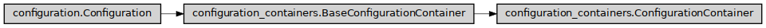

ConfigurationContainer
- class ase2sprkkr.common.configuration_containers.ConfigurationContainer(definition, container=None)[source]
A container for configuration (problem-definition) options and/or sections.
Options in the configuration (problem-definition) files are grouped to sections, sections are then grouped in a configuration file object. This is a base class for these containers.
Class hierarchy
Constructor
- __init__(definition, container=None)[source]
Create the container and its members, according to the definition
- items()[source]
Members of the container. I.e. the options of the section, or sections of the configuration file e.t.c.
- Returns
members (dict)
A dictionary of the shape
{ name : member }
- _get_member(name)[source]
Return the member of the container of a given name. It search either the members and interactive_members containers
- clear(do_not_check_required=False, call_hooks=True, generated=None)[source]
Erase all values (or reset to default) from all options in the container (ad subcontainers)
- Parameters
do_not_check_required (bool) – Do not check validity of the values after clearing. If
False(default) is passed as this argument, the required option without a default value (or a section containing such value) throw an exception, which prevents the clearing (neverthenless, previous values in the section will be cleared anyway).call_hooks (bool) – If False, the cleared values do not raise theirs hooks
generated (bool) – If True
- get(name=None, unknown='find')[source]
Get the value, either of self or of a child of a given name.
- Parameters
name (None or str) – If None, return contained values as a dictionary. Otherwise, return the value of the member with the given name.
unknown (str or None) – If unknown == ‘find’ and there is no member with a given name, try to find the first such-named item (case insensitive) in the descendant conainers. unknown == ‘find_exact’ do the same, case sensitive.
- Returns
value
- Return type
mixed
- set(values={}, value=None, *, unknown='find', error=None, **kwargs)[source]
Set the value(s) of parameter(s). Usage:
> input_parameters.set({‘NITER’: 5, ‘NE’: [10]}) or > input_parameters.set(NITER=5, NE=[10])
- Parameters
values (Optional[Union[Dict[str, Any], str]]) – Dictionary of values to be set, or the name of the value, if the value is given.
value – Value to be set. Setting this argument require to pass string name to the values argument.
unkwnown ('add', 'find' or None) – How to handle unknown (not known by the definition) parameters. If ‘find’, try to find the values in descendant containers. If ‘add’, add unknown values as custom values. If None, throw an exception. Keyword only argument.
**kwargs (dict) – The values to be set (an alternative syntax as syntactical sugar)
- add(name, value=None)[source]
Add custom value to the container
- Parameters
name (str) – Name of the added value
value (value) – Value of the added value
- remove_member(name)[source]
Remove a (previously added) custom value from the container
- Parameters
name (str) –
- as_dict(only_changed='basic', generated=False, copy=False)[source]
Return the content of the container as a dictionary. Nested containers will be transformed to dictionaries as well.
- Parameters
only_changed (Union[bool, str]) – Return only changed values, or all of them? If True, return only the values, that differ from the defaults. If False, return all the values. The default value ‘basic’ means, return all non-expert values and all changed expert values.
generated (bool) – Add generated values
- _find_value(name, lower=False)[source]
Find a value of a given name in self or in any of owned subcontainers.
- Parameters
name (str) –
options (A name of the sought) –
lower (bool) –
true (If) –
insensitive) (find an option with given lowercased name (case) –
- Returns
value (typing.Optional[ase2sprkkr.common.options.Option])
The first option of the given name, if such exists.
Noneotherwise.
- static _interactive_member_name(name)[source]
Create a sanitized name from a member-name.
The sanitized names are keys in
interactive_membersarray, and thus the members are accesible by<container>.<member>notation.
- _save_to_file(file, always=False, name_in_grammar=None, delimiter='')[source]
Save the content of the container to the file (according to the definition)
- Parameters
file (file) – File object (open for writing), where the data should be written
always – Do not consider conditions
- Returns
If any value have been written return True, otherwise return False.
- Return type
something_have_been_written
- validate(why='save')[source]
Validate the configuration data. Raise an exception, if the validation fail.
- Parameters
why (str) – Type of the validation. Possible values
save- Full validation, during save.set- Validation on user input. Allow required values not to be set.parse- Validation during parsing - some check, that are enforced by the parser, can be skipped.